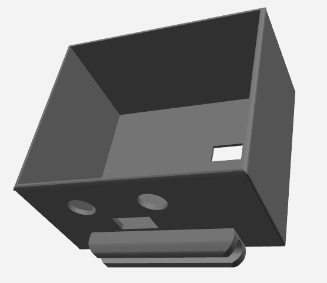

ESP32-C5 智能手表
边端云协同的全栈嵌入式开发 · LVGL UI · AI 语音 · 手势识别

项目概述
本项目基于乐鑫 ESP32-C5（RISC-V 单核）芯片，设计并实现了一款功能丰富的智能手表。系统集成了 FreeRTOS 多任务调度、LVGL 可视化 UI（SquareLine Studio 设计）、云端 AI 语音交互（ASR+LLM+TTS）、端侧手势识别（TFLite Micro CNN）、AP 配网等功能，构建了完整的边端云协同智能穿戴系统。
我在项目中主要负责以下工作：
- FreeRTOS 多任务调度框架的设计与实现
- 云端 AI 语音交互流水线的开发（录音→ASR→LLM→TTS→播放）
- 端侧手势识别模型的训练与 TFLite Micro 部署
- AP Captive Portal 配网方案的实现
- LVGL UI 界面设计与集成（配合 SquareLine Studio）
- MQTT 远程门铃功能与手势开门挑战的开发
边端云分工架构
| 层级 | 位置 | 功能 | 技术 |
|---|---|---|---|
| 边 | ESP32-C5 本地 | 手势识别、UI 渲染、传感器采集 | TFLite Micro、LVGL、FreeRTOS |
| 端 | ESP32-C5 联网 | WiFi 配网、MQTT 通信、HTTP 请求 | AP Captive Portal、Paho MQTT |
| 云 | 远程服务器 | 语音识别、大模型对话、语音合成、天气 | 火山引擎、豆包 LLM、Open-Meteo |
3D 外壳设计
手表外壳采用 3D 打印技术制作，经过多次迭代优化，最终实现了紧凑美观的外观设计。外壳内部预留了电池、传感器、显示屏等模块的安装位，确保所有组件能够稳固装配。

外壳设计要点：
- 紧凑布局：内部空间经过精确计算，确保所有元器件合理排布
- 散热考虑：关键芯片位置预留散热通道，避免长时间运行过热
- 佩戴舒适：外壳边缘经过圆滑处理，佩戴时不会刮伤皮肤
- 按键开口：侧面预留功能按键开口，方便操作
UI 设计展示
手表 UI 采用 SquareLine Studio 可视化设计工具进行开发，支持多种表盘样式和功能页面。UI 设计注重用户体验，界面简洁美观，操作流畅自然。
UI 功能页面：
| 页面 | 功能 | 入口方式 |
|---|---|---|
| Splash | 启动画面，显示品牌 Logo | 开机自动显示 |
| Clock | 表盘主界面，显示时间、日期、天气 | 默认主页 |
| Chat | AI 语音对话界面 | 按住麦克风按钮 |
| Weather | 天气详情页面 | 左右滑动切换 |
| Alarm | 闹钟设置，支持 10 个槽位 | 菜单进入 |
| WiFiConnection | WiFi 配网页面 | AP 热点触发 |
表情动画系统：集成 esp_lv_eaf_player 组件，支持 7 种表情动画（normal、smile、sad、anger、amazed、yes、no），根据场景自动切换，增强交互趣味性。
FreeRTOS 多任务调度
系统采用 FreeRTOS 多任务架构，各功能模块运行在独立任务中，通过队列、信号量、事件组进行通信，确保各模块能够高效协同工作。
任务分配策略：
| 任务名称 | 核心 | 优先级 | 功能描述 |
|---|---|---|---|
| LVGL 任务 | Core 0 | 5（最高） | UI 渲染，负责界面刷新和触摸事件处理 |
| Chat 服务 | Core 0 | 4 | 语音交互状态机，管理录音→ASR→LLM→TTS 全流程 |
| 手势推理 | Core 0 | 5 | 采集 BMI270 陀螺仪数据，运行 TFLite 推理 |
| 录音任务 | Core 0 | 3 | ADC 麦克风录音，16kHz 16bit 单声道 |
| ASR 任务 | Core 0 | 3 | WebSocket 流式传输到火山引擎 ASR |
| TTS 播放 | Core 0 | 4 | 接收 TTS 音频流，PDM 喇叭播放 |
Chat 服务状态机：语音交互采用状态机设计，确保各阶段有序进行：
IDLE → 按下按钮 → RECORDING → 松开 → ASR_PROCESSING → LLM_PROCESSING → TTS_PLAYING → IDLE
云端 AI 语音交互
实现完整的语音交互流水线，用户只需按住按钮说话，手表即可理解语义并作出响应，支持上下文感知（根据当前页面切换功能）。
全链路流水线：
- 录音：用户按住按钮，ADC 麦克风采集 16kHz 16bit 单声道音频
- ASR 语音识别：音频通过 WebSocket 流式传输到火山引擎 ASR，实时返回文字
- LLM 大模型对话：文字发送到豆包 LLM（doubao-seed-1.6-flash），获取智能回复
- TTS 语音合成：回复文字通过 WebSocket 流式传输到火山引擎 TTS，生成语音
- 播放：语音通过 PDM 喇叭播放（24kHz），同时屏幕显示表情动画
上下文感知：系统会根据当前页面自动调整语音交互的行为：
| 当前页面 | 长按行为 | 示例 |
|---|---|---|
| Chat | 开始/停止录音 | "今天天气怎么样？" |
| Alarm | 语音设置闹钟 | "明天早上七点叫我起床" |
| Weather | 语音询问天气 | "这周会下雨吗？" |
| 其他 | 无响应 | — |
端侧手势识别
使用 BMI270 陀螺仪采集手势数据，训练 1D CNN 模型，通过 TFLite Micro 在 ESP32-C5 上本地推理，实现离线手势识别能力。
模型架构：
- 输入：200 个时间步 × 3 轴陀螺仪数据（200, 3）
- 卷积层：Conv1D(8, kernel=5) + ReLU → MaxPool(4) → Conv1D(16, kernel=5) + ReLU → MaxPool(4)
- 全连接层：GlobalAveragePooling → Dense(32) + Dropout(0.2) → Dense(7) + Softmax
- 输出：7 类手势概率分布
性能优化：Tensor Arena（50KB）分配在 PSRAM 中，避免占用宝贵的内部 SRAM，确保系统稳定运行。
手势开门挑战
将手势识别与 MQTT 远程开门结合，实现"手势密码开门"功能：
挑战流程：
- 随机数字：屏幕随机显示目标数字（从 0,2,3,6,7,8 中选取）
- 语音提示：TTS 播报"比出手势{N}，验证开门"
- 手势采集：BMI270 以 200Hz 采集陀螺仪数据，滑动窗口推理
- 连续匹配：需要连续 3 次识别成功，增强安全性
- 开门执行：通过 MQTT 发送开门指令到 ESP32-P4 门锁
远程门铃功能
手表支持远程门铃功能，当 ESP32-P4 门锁检测到访客时，会通过 MQTT 通知手表，手表显示告警界面并播放提示音。
门铃工作流程：
- MQTT 订阅：手表订阅门锁的门铃主题，等待通知
- 告警显示：收到通知后，LVGL 显示告警界面，包含访客照片
- 语音提示：播放门铃音效，提醒用户有访客
- 手势开门：用户可以通过手势挑战功能远程开门
AP 配网
采用 Captive Portal 方案，手机连接手表 AP 热点后自动弹出配网页面，支持 37 种语言，WiFi 凭据保存到 NVS Flash 断电不丢失。
配网流程：
- 检查 NVS：开机检查是否有已保存的 WiFi 配置，有则自动连接
- 开启 AP：无保存配置时，开启 AP 模式（SSID: ESPWatch-XXYY）
- Captive Portal：手机连接 AP 后，自动弹出配网页面
- 选择 WiFi：页面自动扫描并显示可用的 WiFi 列表
- 输入密码：用户选择 WiFi 并输入密码，提交配置
- 保存重启：配置保存到 NVS，设备重启后自动连接
技术亮点：
- DNS 劫持：通过 DNS 劫持实现 Captive Portal，无需用户手动输入地址
- 多语言支持：支持 37 种语言，适配全球用户
- 断电保存：WiFi 凭据存储在 NVS Flash 中，断电不丢失
完整功能矩阵
| 功能 | 边（本地） | 端（联网） | 云（服务） |
|---|---|---|---|
| 手势识别 | TFLite Micro CNN | — | — |
| 表盘显示 | LVGL + SquareLine | NTP 时间同步 | 天气 API |
| AI 对话 | 录音/播放 | WebSocket ASR/TTS | 火山引擎 + 豆包 LLM |
| 远程门铃 | LVGL 告警 UI | MQTT 订阅 | MQTT Broker |
| 手势开门 | BMI270 + 推理 | MQTT 开门指令 | — |
| WiFi 配网 | AP 热点 + DNS | HTTP Captive Portal | — |
落地成果
技术栈
- 芯片： ESP32-C5 (RISC-V 单核)
- 开发框架： ESP-IDF v5.5+
- UI 框架： LVGL + SquareLine Studio
- 任务调度： FreeRTOS
- 手势识别： TFLite Micro, 1D CNN
- 语音交互： 火山引擎 ASR/TTS + 豆包 LLM
- 通信协议： MQTT, WebSocket, HTTP
- 传感器： BMI270 (陀螺仪), MAX30102 (心率)
- 时钟芯片： DS3231 RTC